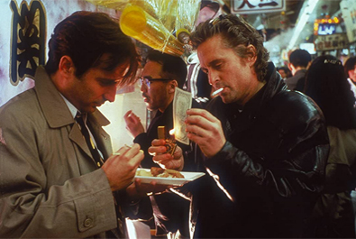
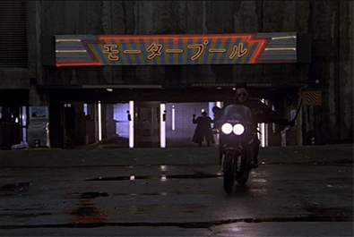
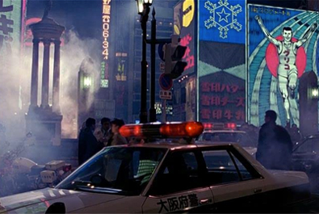
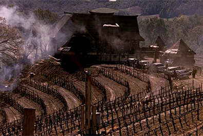
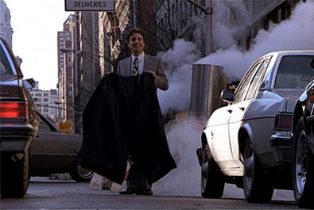
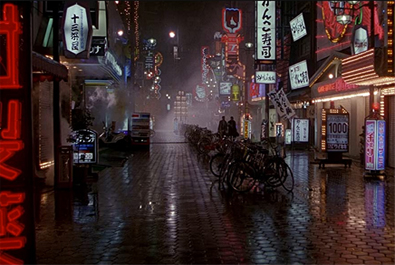

Stanley R. Jaffe
Sherry Lansing
Craig Bolotin
Warren Lewis


Detective Nick Conklin
Detective Charlie Vincent
Joyce
Captain Oliver
Sugai's Bodyguard


Large parts of Black Rain were filmed in Osaka, although some of the locations have changed somewhat since the late 1980s when production took place. The original intention of Ridley Scott was to film in the Kabukicho nightlife district of Shinjuku, Tokyo. However, the Osaka authorities were more receptive towards film permits so the similarly futuristic neon-infused Dotonbori in Namba was chosen as the principal filming location in Japan. An aerial shot of Osaka bay at sunset with the estuaries of the Yodogawa, Kanzakigawa and Ajigawa rivers frames the opening sequence of the arrival into Japan. The main filming location in Osaka is by the Ebisubashi bridge. The futurist Kirin Plaza building (architect Shin Takamatsu, built 1987), the Ebisubashi and the famous neon wall overlooking the Dotonbori canal creates the Blade Runner-esque mise-en-scène.
The film began shooting in November 1988 and ended in March 1989. Japanese actor Yusaku Matsuda, who played Sato, died of bladder cancer shortly after the film's completion. The high cost and red tape involved in filming in Japan prompted director Scott to declare that he would never film in that country again. Scott was eventually forced to leave the country and complete the final climactic scene in Napa Valley, California. This film marks the first collaboration between Hans Zimmer and Ridley Scott. He would go on to score several more films for Scott, including Gladiator, Thelma & Louise, Hannibal, Black Hawk Down and Matchstick Men. Japanese musician Ryuichi Sakamoto contributed the song "Laser Man" to the film's soundtrack.
Vincent Canby of the New York Times wrote that the film "plays as if it had been written in the course of production. There seems to have been more desperation off the screen than ever gets into the movie. As bad movies go, however. the American Black Rain is easy to sit through, mostly because of the way Mr. Scott and his production associates capture the singular look of contemporary urban Japan."
Roger Ebert stated, "Even given all of its inconsistencies, implausibilities and recycled cliches, Black Rain might have been entertaining if the filmmakers had found the right note for the material. But this is a designer movie, all look and no heart, and the Douglas character is curiously unsympathetic."
Gene Siskel of the Chicago Tribune wrote, "The cross-cultural action picture might have worked if the filmmakers had come up with a script in which Douglas' character had been rendered weak and confused by being a fish trying to swim in strange waters. But instead he is presented as a traditional action hero dominating everyone in sight. The cultural imperialism of that decision makes for a routine and frequently offensive story full of Asian stereotypes."
A review in Variety stated, "Since this is a Ridley Scott film, Black Rain is about 90% atmosphere and 10% story. But what atmosphere!"

